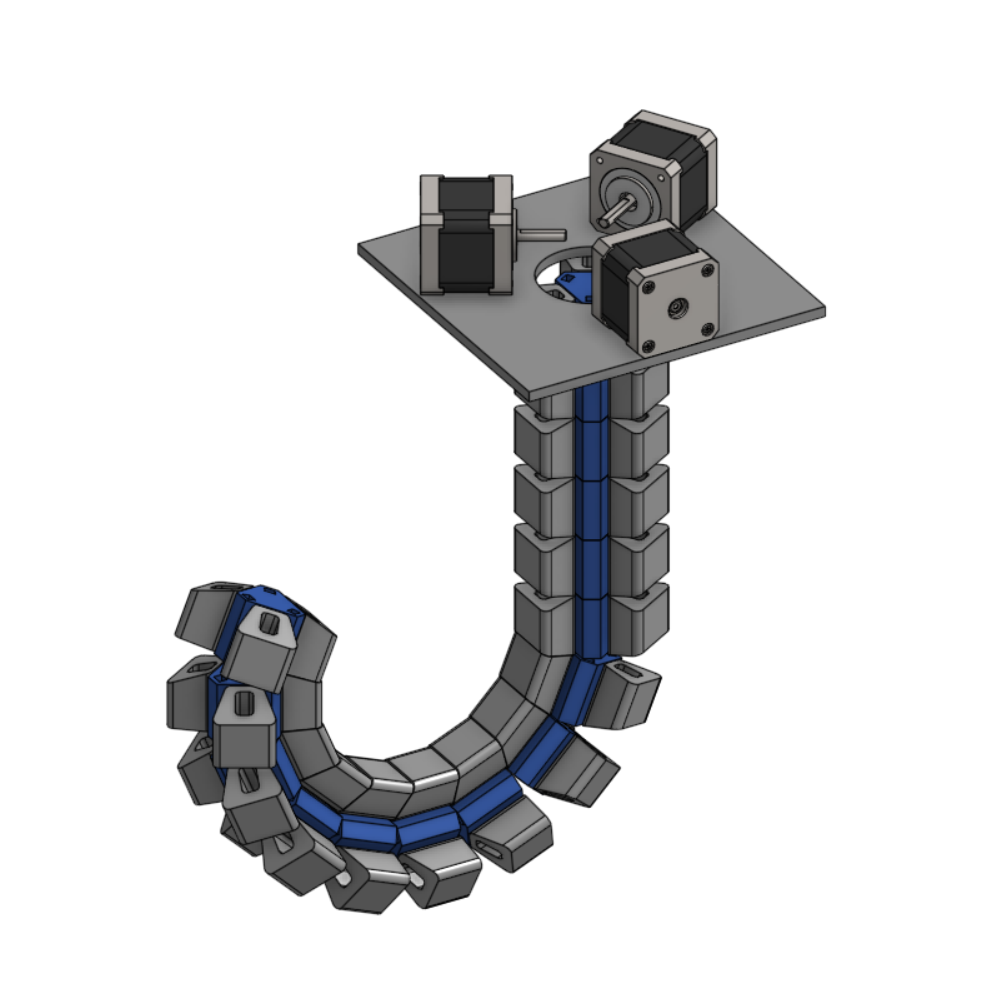
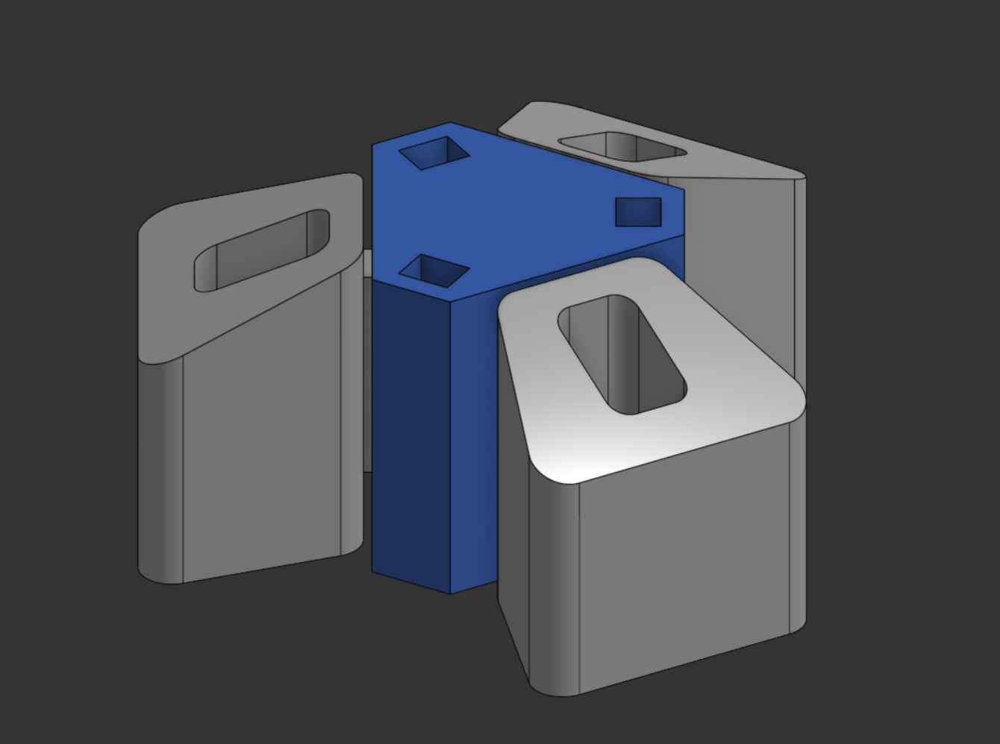
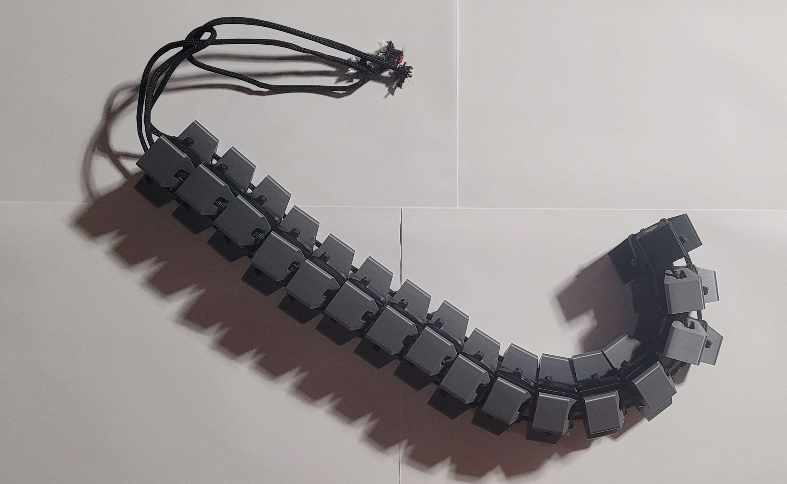
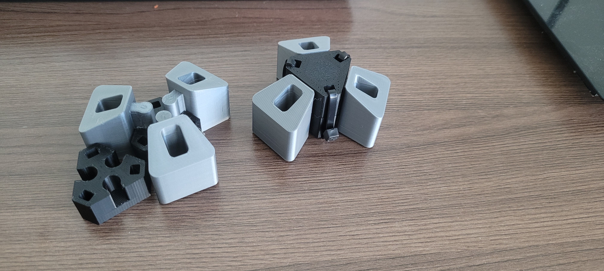
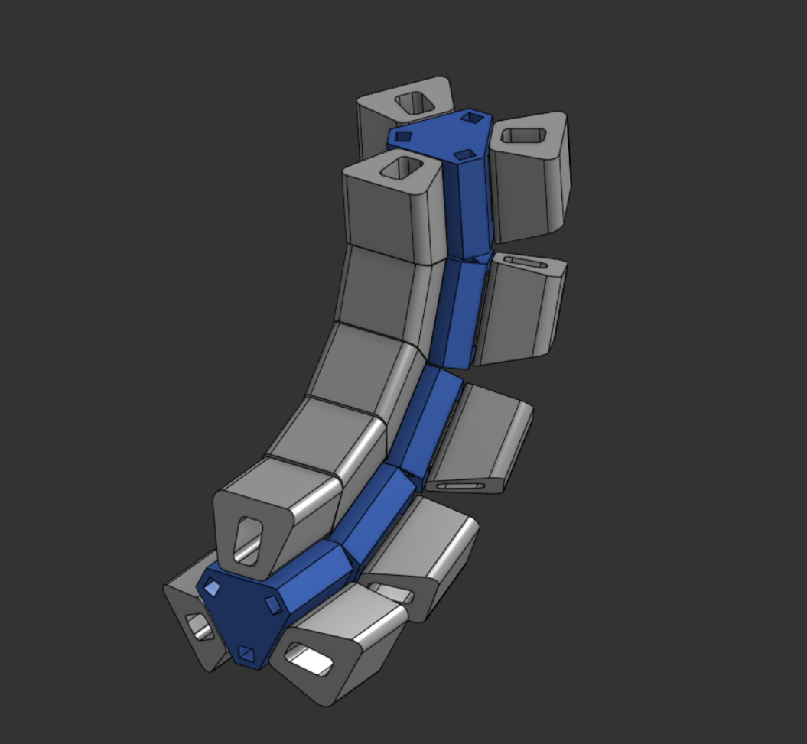
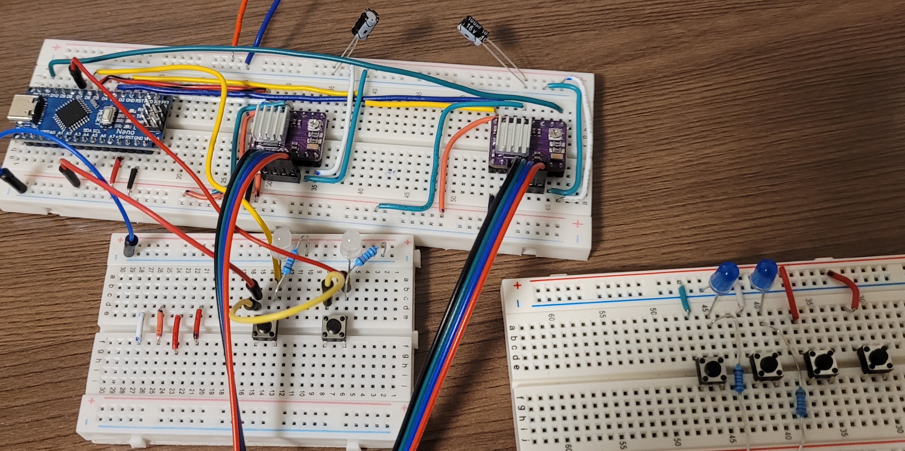

3D Octopus Arm End Effector

Problem Statement
Traditional robotic manipulators are highly effective in structured environments, but their rigid architectures can limit adaptability, increase mechanical complexity, and raise manufacturing costs when handling delicate or irregular objects. Soft robotic solutions address some of these challenges, yet many designs remain difficult to manufacture, assemble, and scale due to high component counts and specialized materials.
Contribution





What?
Project is based on the research paper “https://www.cell.com/device/pdfExtended/S2666-9986(24)00603-3.” A major part of the project involved transitioning from a TPU-based design to a predominantly PLA-based system to improve print reliability, structural consistency, and ease of assembly. Throughout development, I used CAD modeling, iterative prototyping, to reduce the number of components needed for assembly.
How?
I redesigned and optimized an octopus-inspired robotic arm by first analyzing the original mechanism to identify areas where component count, assembly complexity, and manufacturability could be improved. Using CAD software, I simplified the mechanical architecture and redesigned several structural components to create a more compact and practical system for 3D printing and assembly.